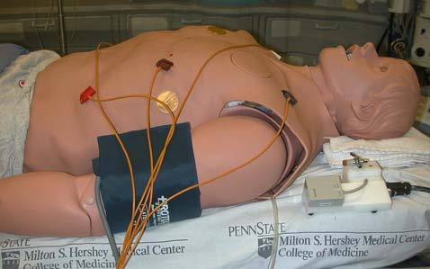
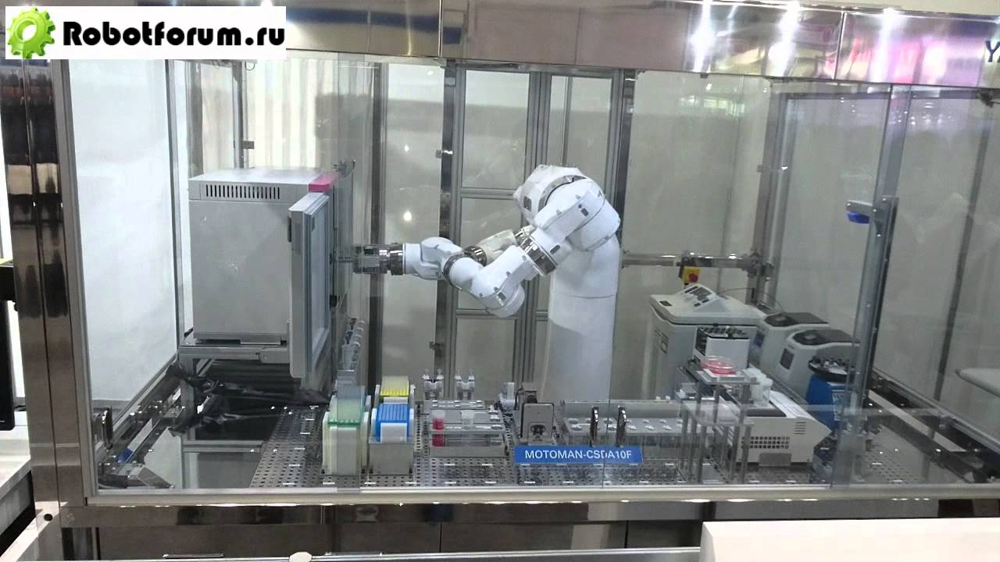
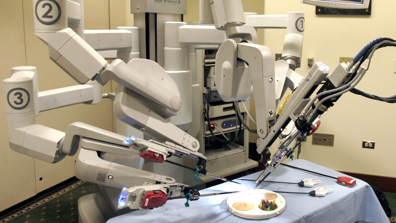
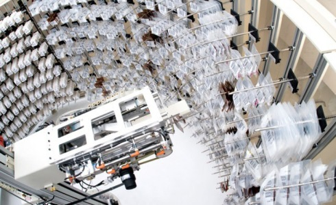

Приклади

Робот-пацієнт
В кінці 90-х років минулого століття була створена повністю універсальна роботизована хірургічна система з дистанційним управлінням - робот-хірург Da Vinci (Да Вінчі).Система забезпечена маніпуляторами з штучними зап'ястями, що мають сім ступенів свободи (аналогічно руці людини), і тривимірної інтуїтивної візуалізацією (3D-монітором). Ці нововведення створили передумови для малоінвазивного виконання складних операцій в різних областях хірургії.Хірургічна система складається з ергономічною консолі хірурга, стійки з чотирма інтерактивними роботизованими руками біля операційного столу, високопродуктивної системи огляду і патентованих інструментів EndoWrist. Збройні сучасної роботизованою технологією, руху рук хірурга масштабируются, фільтруються і поступово перетворюються в точні рухи інструментів EndoWrist. Як результат, створюється інтуїтивний інтерфейс з чудовими хірургічними можливостями.На думку фахівців, система Da Vinci може забезпечити хірургу кращу візуалізацію, вправність, точність і керованість, ніж у відкритій хірургії, при виконанні операції через 1-2-сантиметрові розрізи. Це єдина хірургічна система, призначена для роботи сидячи, що не тільки більш комфортно, але також дає клінічні переваги внаслідок меншого втоми хірурга. Система забезпечує природне вирівнювання очей і рук на хірургічної консолі, що сприяє кращій ергономіці, ніж традиційна лапароскопія. Нарешті, так як роботизовані руки дають додаткову механічну силу, хірург може оперувати пацієнтів навіть з вираженим ожирінням. І нарешті, система Da Vinci зменшує ризик інфікування хірургічної бригади вірусами гепатитів, ВІЛ та ін.

Робот-лаборант
Співробітники американської компанії Veebot вирішили розширити сферу застосування роботів в медицині, створивши практично повністю автоматизований пристрій для забору крові з вени. Автомат отримав назву Phlebotomist Prime. Щоб правильно визначити місце, де знаходиться вена, цей робот використовує камеру, інфрачервоне підсвічування і спеціальне програмне забезпечення. Ультразвукове дослідження дозволяє переконатися, що її товщини досить для проколу. Весь процес займає близько однієї хвилини. Медсестрі лише необхідно піднести відповідну пробірку.Клінічні випробування робота-лаборанта відбудуться найближчим часом. На сьогодні робот Veebot визначає розташування вени в 83% випадків. До початку випробувань розробники планують збільшити цей показник до 90%.

Робот-хірург
В кінці 90-х років минулого століття була створена повністю універсальна роботизована хірургічна система з дистанційним управлінням - робот-хірург Da Vinci (Да Вінчі).Система забезпечена маніпуляторами з штучними зап'ястями, що мають сім ступенів свободи (аналогічно руці людини), і тривимірної інтуїтивної візуалізацією (3D-монітором). Ці нововведення створили передумови для малоінвазивного виконання складних операцій в різних областях хірургії.Хірургічна система складається з ергономічною консолі хірурга, стійки з чотирма інтерактивними роботизованими руками біля операційного столу, високопродуктивної системи огляду і патентованих інструментів EndoWrist. Збройні сучасної роботизованою технологією, руху рук хірурга масштабируются, фільтруються і поступово перетворюються в точні рухи інструментів EndoWrist. Як результат, створюється інтуїтивний інтерфейс з чудовими хірургічними можливостями.На думку фахівців, система Da Vinci може забезпечити хірургу кращу візуалізацію, вправність, точність і керованість, ніж у відкритій хірургії, при виконанні операції через 1-2-сантиметрові розрізи. Це єдина хірургічна система, призначена для роботи сидячи, що не тільки більш комфортно, але також дає клінічні переваги внаслідок меншого втоми хірурга. Система забезпечує природне вирівнювання очей і рук на хірургічної консолі, що сприяє кращій ергономіці, ніж традиційна лапароскопія. Нарешті, так як роботизовані руки дають додаткову механічну силу, хірург може оперувати пацієнтів навіть з вираженим ожирінням. І нарешті, система Da Vinci зменшує ризик інфікування хірургічної бригади вірусами гепатитів, ВІЛ та ін.

Робот-фармацевт
«Аптечний» робот, створений в Каліфорнійському університеті (США), може сортувати десятки тисяч доз різних ЛЗ. robots11Сама по собі сортування ліків є досить трудомістким процесом, що вимагає старанності, зосередженості і підвищеної концентрації уваги. Дана процедура досить втомлює для персоналу аптек, а помилки чреваті заподіянням шкоди здоров'ю покупців. Саме ці тонкощі в роботі фармацевтів і підштовхнули розробників до створення та запровадження робота-аптекаря.Тепер, завдяки наявності роботизованої системи, провізорів досить вибрати на комп'ютері назву необхідного препарату, щоб отримати його задану кількість і дозу в спеціальному пластиковому піддоні. Принцип відбору і відліку одиниць ЛС заснований на зчитуванні ідентифікаційного штрих-коду з упаковки. Самі ліки розташовуються в вертикальних міні-бункерах. Пересуваючись уздовж цих бункерів, робот зчитує штрих-код і відраховує необхідну кількість таблеток. Також розробники передбачили можливість автоматичного скріплення стопки таблеток пластиковим кільцем (в стосі таблетки розташовуються в порядку їх прийому пацієнтом).Крім сортування і відліку препаратів, що є на складі, роботизована система дозволяє вести їх облік. Очевидно, що персонал аптеки може витрачати час, що звільнився від виконання рутинних операцій, на більш ефективне консультування відвідувачів.